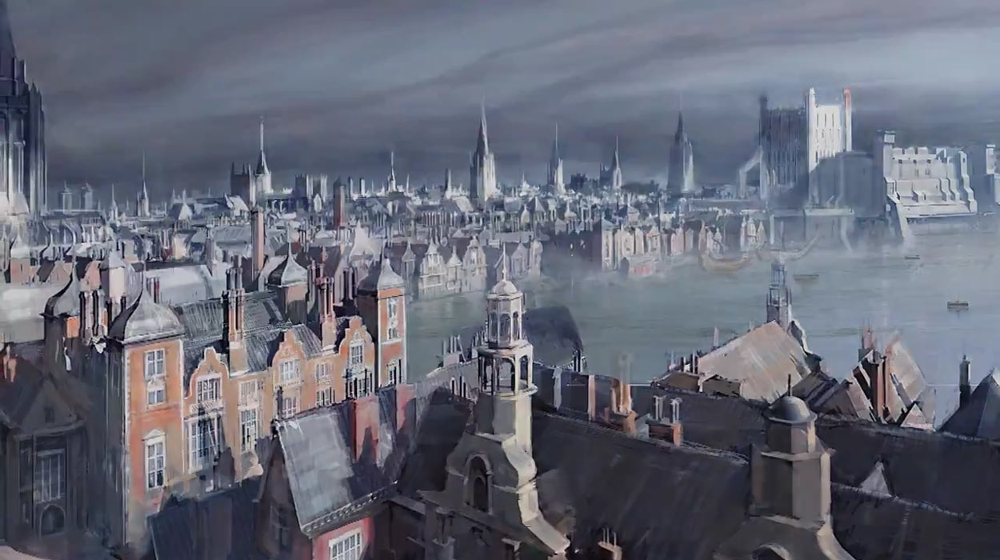
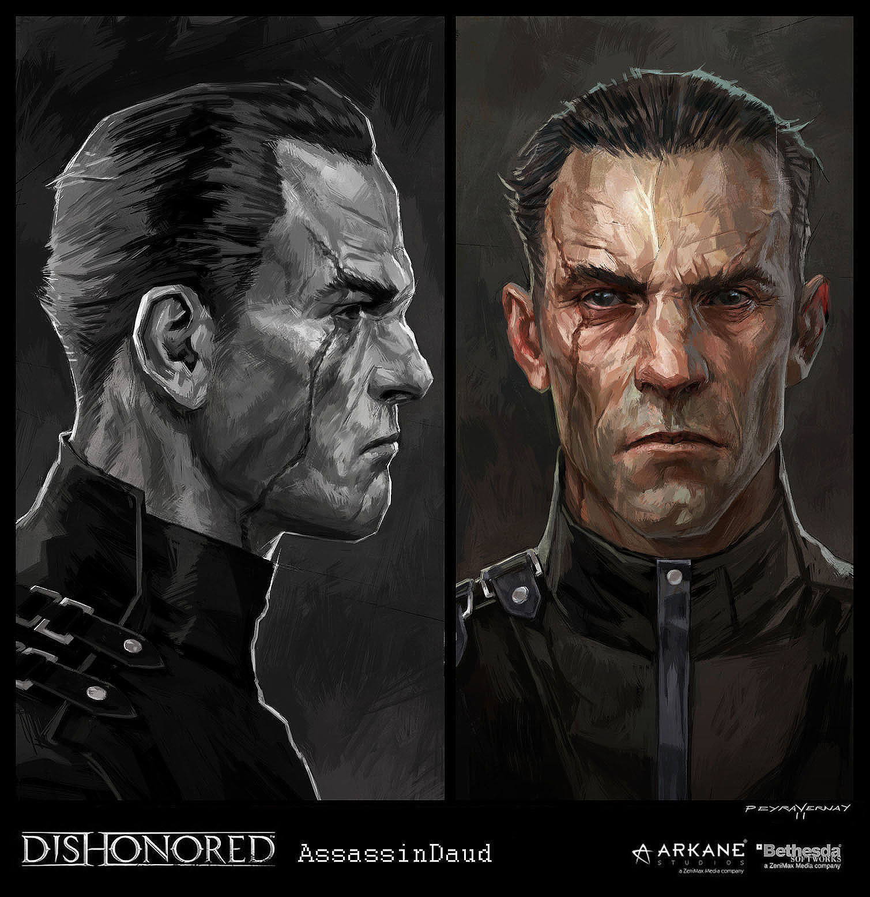
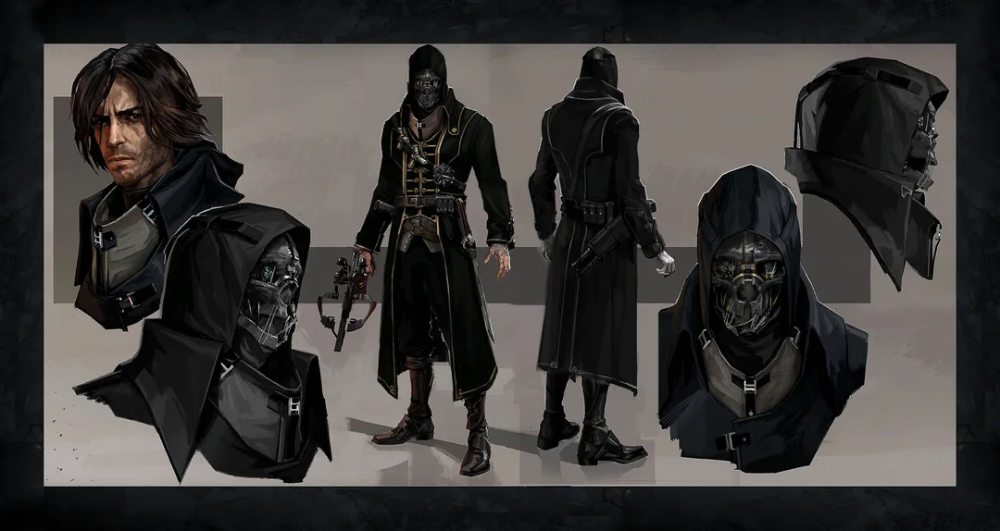

Dishonored est un jeu développé par Arkane Studio et édité par Besthesda Softworks sortie en 2012. Situé dans la ville industrielle fictive de Dunwall, ravagée par la peste, Dishonored suit l'histoire de Corvo Attano, garde du corps de l'impératrice des îles. Il est accusé de son meurtre et mis en prison, le forçant à devenir un assassin pour se venger de ceux qui ont conspiré contre lui. Corvo est aidé dans sa quête par les loyalistes, un groupe de résistance luttant pour récupérer Dunwall. Cependant son principal allié reste le don que l'Outsider, un être divin et hors du temps, lui confère. Corvo obtient ainsi des capacités magiques grâce à la marque du mystérieux Outsider. Ce jeu est un bac-à-sable version assassin, les niveaux et les pouvoirs de Corvo sont pensés pour offrir des opportunités au joueurs. Beaucoup de choses dans ce jeu sont facultatives mais ces options de gameplay ne sont pas là pour faire du remplissage. Le gameplay est donc personnalisable à souhaits. Il y a une variété d'items, de pouvoirs et de passages dans les niveaux qui permettent une grande rejouabilité. Il faut également avoir consicence que le gameplay aura une influence sur l'histoire. Aussi, si le joueur complète les niveaux en faisant des bains de sang, alors la peste progressera en ville, il y aura plus de nuées de rats, des geignards et globalement plus de misère. La fin de l'histoire sera plus ou moins heureuse en fonction de la léthalité de Corvo durant sa quête.
Là où les concurrents ne cessait de courir après le rêve de l'open world parfait, des mondes toujours plus grands quitte à ce que le contenu soit insuffisant, Arkane Studio a fait le pari de se concentré sur un système de niveau en semi monde ouvert. Certes, cela limite les possibilités pour le joueur cependant cela permet de garantir un rythme milimétré pour le gameplay. Le joueur ne peut jamais être réellement perdu mais sans empiéter sur le sentiment de liberté, les limites des cartes sont toujours cohérentes (murs de la ville, barrière d'un jardin etc...) pour ne pas frustrer le joueur. Plutôt que d'essayer de se plier aux tendances, Arkane a cherché a assumer ses limites pour perfectionner les qualités de son jeu. Assumer son originalité, c'est ça qui défini vraiment ce jeu. Malgré le choix du steam punk, qui peut facilement devenir impersonnel, la direction artistique ne ressemble à aucun autre jeu. Les visuels sont directement tirés des peintures des concept-artistes Antonov et Mitton, cette aspect de peinture à l'huile ne s'est pas limité aux concept-arts puisque cela définie une partie de la DA du jeu. L'ambiance des environnements est fortement inspirée des allées Victorienne de ville tel que Londres ou Edimbourg au XIXe siècle, synthétisée avec l'esthetique steampunk, la ville semble être à la fois sombre, angoissante et rend crédible les limites des cartes. Le joueur est amené à ressentir claustration et écrasement face au dédale qu'est Dunwall. Le jeu fait également une synthèse intéressante entre pouvoirs magiques, religion occulte et univers steampunk traditionnel. Cet univers invite le joueurs à devenir à la fois acteur en tant qu'assassin dans ce monde morose , mais aussi et surtout spectateur de la misère.
  